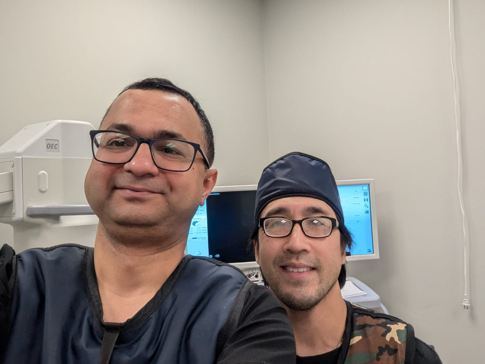
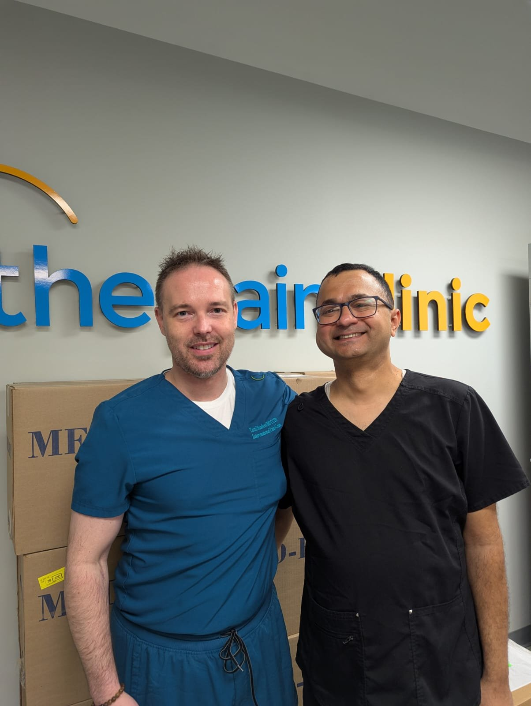
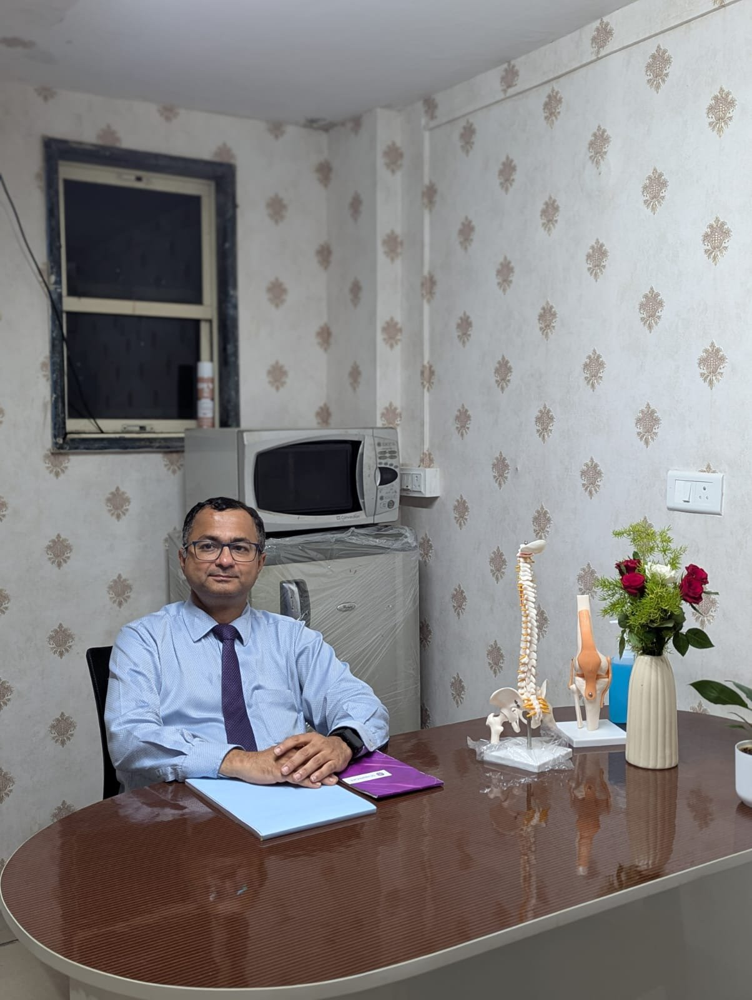

Dr. Paradkar's Ortho Cure and Pain Relief Clinic
Dr. Paradkar's Ortho Cure and Pain Relief Clinic
Dr. Paradkar's Ortho Cure and Pain Relief Clinic
Dr. Paradkar's Ortho Cure and Pain Relief Clinic
Real-time non-surgical pain management procedures performed by Dr. Paradkar, including precision joint injections, spine interventions, and trigger point therapies.

OT Fluoroscopy Procedure
Precision C-arm guided sterile intervention
.jpeg)
Knee Intra-Articular Injection
Viscosupplementation & targeted pain relief
.jpeg)
Geriatric Knee Arthritis Care
Non-surgical relief for severe osteoarthritis

Targeted Knee Injection
Minimally invasive mobility restoration

Knee Joint Pain Relief
Direct joint therapy for chronic pain
.jpeg)
Advanced Joint Care
Targeted treatment for joint inflammation
.jpeg)
Precision Injection Technique
Sterile anatomical landmark guidance

Restoring Patient Mobility
Effective non-surgical arthritis relief
.jpeg)
Thoracic Spine Relief
Targeted paraspinal & muscle pain therapy

Spine & Back Trigger Point
Relief for chronic upper back spasm
.jpeg)
Tennis Elbow Injection
Lateral epicondylitis tendinitis therapy
.jpeg)
Neck & Trapezius Trigger Point
Quick relief for cervical & shoulder stiffness

Shoulder Myofascial Therapy
Targeted alleviation of acute muscle knot pain
Specialized non-surgical treatment pathways for joint arthritis and sports or occupational strain injuries.
.jpeg)
Knee Intra-Articular Injections Program
Long-term relief and mobility restoration for severe knee pain without surgery.

Tennis Elbow Treatment by Injections
Targeted specialist injection therapies to overcome chronic lateral elbow pain.







Take the first step towards a pain-free life. Schedule a consultation with Dr. Paradkar today.
Enquiry